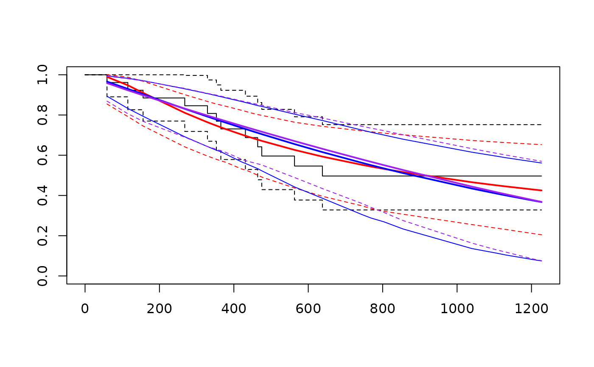

Parametric modelling or regression for time-to-event data. Several built-in distributions are available, and users may supply their own.
Usage
flexsurvreg(
formula,
anc = NULL,
data,
weights,
bhazard,
rtrunc,
subset,
na.action,
dist,
inits,
fixedpars = NULL,
dfns = NULL,
aux = NULL,
cl = 0.95,
integ.opts = NULL,
sr.control = survreg.control(),
hessian = TRUE,
hess.control = NULL,
...
)Arguments
- formula
A formula expression in conventional R linear modelling syntax. The response must be a survival object as returned by the
Survfunction, and any covariates are given on the right-hand side. For example,Surv(time, dead) ~ age + sexSurvobjects oftype="right","counting","interval1"or"interval2"are supported, corresponding to right-censored, left-truncated or interval-censored observations.If there are no covariates, specify
1on the right hand side, for exampleSurv(time, dead) ~ 1.If the right hand side is specified as
.all remaining variables are included as covariates. For example,Surv(time, dead) ~ .corresponds toSurv(time, dead) ~ age + sexifdatacontains the variablestime,dead,age, andsex.By default, covariates are placed on the ``location'' parameter of the distribution, typically the "scale" or "rate" parameter, through a linear model, or a log-linear model if this parameter must be positive. This gives an accelerated failure time model or a proportional hazards model (see
distbelow) depending on how the distribution is parameterised.Covariates can be placed on other (``ancillary'') parameters by using the name of the parameter as a ``function'' in the formula. For example, in a Weibull model, the following expresses the scale parameter in terms of age and a treatment variable
treat, and the shape parameter in terms of sex and treatment.Surv(time, dead) ~ age + treat + shape(sex) + shape(treat)However, if the names of the ancillary parameters clash with any real functions that might be used in formulae (such as
I(), orfactor()), then those functions will not work in the formula. A safer way to model covariates on ancillary parameters is through theancargument toflexsurvreg.survregusers should also note that the functionstrata()is ignored, so that any covariates surrounded bystrata()are applied to the location parameter. Likewise the functionfrailty()is not handled.- anc
An alternative and safer way to model covariates on ancillary parameters, that is, parameters other than the main location parameter of the distribution. This is a named list of formulae, with the name of each component giving the parameter to be modelled. The model above can also be defined as:
Surv(time, dead) ~ age + treat, anc = list(shape = ~ sex + treat)- data
A data frame in which to find variables supplied in
formula. If not given, the variables should be in the working environment.- weights
Optional numeric variable giving weights for each individual in the data. The fitted model is then defined by maximising the weighted sum of the individual-specific log-likelihoods.
- bhazard
Optional variable giving expected hazards for relative survival models. The model is described by Nelson et al. (2007).
bhazardshould contain a vector of values for each person in the data.For people with observed events,
bhazardrefers to the hazard at the observed event time.For people whose event time is left-censored or interval-censored,
bhazardshould contain the probability of dying by the end of the corresponding interval, conditionally on being alive at the start.For people whose event time is right-censored, the value of
bhazardis ignored and does not need to be specified.
If
bhazardis supplied, then the parameter estimates returned byflexsurvregand the outputs returned bysummary.flexsurvregdescribe the parametric model for relative survival.For relative survival models, the log-likelihood returned by
flexsurvregis a partial log-likelihood, which omits a constant term defined by the sum of the cumulative hazards at the event or censoring time for each individual. Hence this constant must be added if a full likelihood is needed.- rtrunc
Optional variable giving individual-specific right-truncation times. Used for analysing data with "retrospective ascertainment". For example, suppose we want to estimate the distribution of the time from onset of a disease to death, but have only observed cases known to have died by the current date. In this case, times from onset to death for individuals in the data are right-truncated by the current date minus the onset date. Predicted survival times for new cases can then be described by an un-truncated version of the fitted distribution.
These models can suffer from weakly identifiable parameters and badly-behaved likelihood functions, and it is advised to compare convergence for different initial values by supplying different
initsarguments toflexsurvreg.- subset
Vector of integers or logicals specifying the subset of the observations to be used in the fit.
- na.action
a missing-data filter function, applied after any 'subset' argument has been used. Default is
options()$na.action.- dist
Typically, one of the strings in the first column of the following table, identifying a built-in distribution. This table also identifies the location parameters, and whether covariates on these parameters represent a proportional hazards (PH) or accelerated failure time (AFT) model. In an accelerated failure time model, the covariate speeds up or slows down the passage of time. So if the coefficient (presented on the log scale) is log(2), then doubling the covariate value would give half the expected survival time.
"gengamma"Generalized gamma (stable) mu AFT "gengamma.orig"Generalized gamma (original) scale AFT "genf"Generalized F (stable) mu AFT "genf.orig"Generalized F (original) mu AFT "weibull"Weibull scale AFT "gamma"Gamma rate AFT "exp"Exponential rate PH "llogis"Log-logistic scale AFT "lnorm"Log-normal meanlog AFT "gompertz"Gompertz rate PH "exponential"and"lognormal"can be used as aliases for"exp"and"lnorm", for compatibility withsurvreg.Alternatively,
distcan be a list specifying a custom distribution. See section ``Custom distributions'' below for how to construct this list.Very flexible spline-based distributions can also be fitted with
flexsurvspline.The parameterisations of the built-in distributions used here are the same as in their built-in distribution functions:
dgengamma,dgengamma.orig,dgenf,dgenf.orig,dweibull,dgamma,dexp,dlnorm,dgompertz, respectively. The functions in base R are used where available, otherwise, they are provided in this package.A package vignette "Distributions reference" lists the survivor functions and covariate effect parameterisations used by each built-in distribution.
For the Weibull, exponential and log-normal distributions,
flexsurvregsimply works by callingsurvregto obtain the maximum likelihood estimates, then callingoptimto double-check convergence and obtain the covariance matrix forflexsurvreg's preferred parameterisation.The Weibull parameterisation is different from that in
survreg, instead it is consistent withdweibull. The"scale"reported bysurvregis equivalent to1/shapeas defined bydweibulland henceflexsurvreg. The first coefficient(Intercept)reported bysurvregis equivalent tolog(scale)indweibullandflexsurvreg.Similarly in the exponential distribution, the rate, rather than the mean, is modelled on covariates.
The object
flexsurv.distslists the names of the built-in distributions, their parameters, location parameter, functions used to transform the parameter ranges to and from the real line, and the functions used to generate initial values of each parameter for estimation.- inits
An optional numeric vector giving initial values for each unknown parameter. These are numbered in the order: baseline parameters (in the order they appear in the distribution function, e.g. shape before scale in the Weibull), covariate effects on the location parameter, covariate effects on the remaining parameters. This is the same order as the printed estimates in the fitted model.
If not specified, default initial values are chosen from a simple summary of the survival or censoring times, for example the mean is often used to initialize scale parameters. See the object
flexsurv.distsfor the exact methods used. If the likelihood surface may be uneven, it is advised to run the optimisation starting from various different initial values to ensure convergence to the true global maximum.- fixedpars
Vector of indices of parameters whose values will be fixed at their initial values during the optimisation. The indices are ordered as in
inits. For example, in a stable generalized Gamma model with two covariates, to fix the third of three generalized gamma parameters (the shapeQ, see the help forGenGamma) and the second covariate, specifyfixedpars = c(3, 5)- dfns
An alternative way to define a custom survival distribution (see section ``Custom distributions'' below). A list whose components may include
"d","p","h", or"H"containing the probability density, cumulative distribution, hazard, or cumulative hazard functions of the distribution. For example,list(d=dllogis, p=pllogis).If
dfnsis used, a customdlistmust still be provided, butdllogisandpllogisneed not be visible from the global environment. This is useful ifflexsurvregis called within other functions or environments where the distribution functions are also defined dynamically.- aux
A named list of other arguments to pass to custom distribution functions. This is used, for example, by
flexsurvsplineto supply the knot locations and modelling scale (e.g. hazard or odds). This cannot be used to fix parameters of a distribution --- usefixedparsfor that.- cl
Width of symmetric confidence intervals for maximum likelihood estimates, by default 0.95.
- integ.opts
List of named arguments to pass to
integrate, if a custom density or hazard is provided without its cumulative version. For example,integ.opts = list(rel.tol=1e-12)- sr.control
For the models which use
survregto find the maximum likelihood estimates (Weibull, exponential, log-normal), this list is passed as thecontrolargument tosurvreg.- hessian
Calculate the covariances and confidence intervals for the parameters. Defaults to
TRUE.- hess.control
List of options to control covariance matrix computation. Available options are:
numeric. IfTRUEthen numerical methods are used to compute the Hessian for models where an analytic Hessian is available. These models include the Weibull (both versions), exponential, Gompertz and spline models with hazard or odds scale. The default is to use the analytic Hessian for these models. For all other models, numerical methods are always used to compute the Hessian, whether or not this option is set.tol.solve. The tolerance used forsolvewhen inverting the Hessian (default.Machine$double.eps)tol.evaluesThe accepted tolerance for negative eigenvalues in the covariance matrix (default1e-05).The Hessian is positive definite, thus invertible, at the maximum likelihood. If the Hessian computed after optimisation convergence can't be inverted, this is either because the converged result is not the maximum likelihood (e.g. it could be a "saddle point"), or because the numerical methods used to obtain the Hessian were inaccurate. If you suspect that the Hessian was computed wrongly enough that it is not invertible, but not wrongly enough that the nearest valid inverse would be an inaccurate estimate of the covariance matrix, then these tolerance values can be modified (reducing
tol.solveor increasingtol.evalues) to allow the inverse to be computed.- ...
Optional arguments to the general-purpose optimisation routine
optim. For example, the BFGS optimisation algorithm is the default inflexsurvreg, but this can be changed, for example tomethod="Nelder-Mead"which can be more robust to poor initial values. If the optimisation fails to converge, consider normalising the problem using, for example,control=list(fnscale = 2500), for example, replacing 2500 by a number of the order of magnitude of the likelihood. If 'false' convergence is reported with a non-positive-definite Hessian, then consider tightening the tolerance criteria for convergence. If the optimisation takes a long time, intermediate steps can be printed using thetraceargument of the control list. Seeoptimfor details.
Value
A list of class "flexsurvreg" containing information about
the fitted model. Components of interest to users may include:
- call
A copy of the function call, for use in post-processing.
- dlist
List defining the survival distribution used.
- res
Matrix of maximum likelihood estimates and confidence limits, with parameters on their natural scales.
- res.t
Matrix of maximum likelihood estimates and confidence limits, with parameters all transformed to the real line (using a log transform for all built-in models where this is necessary). The
coef,vcovandconfintmethods forflexsurvregobjects work on this scale.- coefficients
The transformed maximum likelihood estimates, as in
res.t. Callingcoef()on aflexsurvregobject simply returns this component.- loglik
Log-likelihood. This will differ from Stata, where the sum of the log uncensored survival times is added to the log-likelihood in survival models, to remove dependency on the time scale.
For relative survival models specified with
bhazard, this is a partial log-likelihood which omits a constant term defined by the sum of the cumulative hazards over all event or censoring times.- logliki
Vector of individual contributions to the log-likelihood
- AIC
Akaike's information criterion (-2*log likelihood + 2*number of estimated parameters)
- cov
Covariance matrix of the parameters, on the real-line scale (e.g. log scale), which can be extracted with
vcov.- data
Data used in the model fit. To extract this in the standard R formats, use use
model.frame.flexsurvregormodel.matrix.flexsurvreg.
Details
Parameters are estimated by maximum likelihood using the algorithms
available in the standard R optim function. Parameters
defined to be positive are estimated on the log scale. Confidence intervals
are estimated from the Hessian at the maximum, and transformed back to the
original scale of the parameters.
The usage of flexsurvreg is intended to be similar to
survreg in the survival package.
Custom distributions
flexsurvreg is intended to be
easy to extend to handle new distributions. To define a new distribution
for use in flexsurvreg, construct a list with the following
elements:
"name"A string naming the distribution. If this is called
"dist", for example, then there must be visible in the working environment, at least, eithera) a function called
ddistwhich defines the probability density,or
b) a function called
hdistwhich defines the hazard.Ideally, in case a) there should also be a function called
pdistwhich defines the probability distribution or cumulative density, and in case b) there should be a function calledHdistdefining the cumulative hazard. If these additional functions are not provided, flexsurv attempts to automatically create them by numerically integrating the density or hazard function. However, model fitting will be much slower, or may not even work at all, if the analytic versions of these functions are not available.The functions must accept vector arguments (representing different times, or alternative values for each parameter) and return the results as a vector. The function
Vectorizemay be helpful for doing this: see the example below. These functions may be in an add-on package (see below for an example) or may be user-written. If they are user-written they must be defined in the global environment, or supplied explicitly through thedfnsargument toflexsurvreg. The latter may be useful if the functions are created dynamically (as in the source offlexsurvspline) and thus not visible through R's scoping rules.Arguments other than parameters must be named in the conventional way -- for example
xfor the first argument of the density function or hazard, as indnorm(x, ...)andqfor the first argument of the probability function. Density functions should also have an argumentlog, after the parameters, which whenTRUE, computes the log density, using a numerically stable additive formula if possible.Additional functions with names beginning with
"DLd"and"DLS"may be defined to calculate the derivatives of the log density and log survival probability, with respect to the parameters of the distribution. The parameters are expressed on the real line, for example after log transformation if they are defined as positive. The first argument must be namedt, representing the time, and the remaining arguments must be named as the parameters of the density function. The function must return a matrix with rows corresponding to times, and columns corresponding to the parameters of the distribution. The derivatives are used, if available, to speed up the model fitting withoptim."pars"Vector of strings naming the parameters of the distribution. These must be the same names as the arguments of the density and probability functions.
"location"Name of the main parameter governing the mean of the distribution. This is the default parameter on which covariates are placed in the
formulasupplied toflexsurvreg."transforms"List of R functions which transform the range of values taken by each parameter onto the real line. For example,
c(log, log)for a distribution with two positive parameters."inv.transforms"List of R functions defining the corresponding inverse transformations. Note these must be lists, even for single parameter distributions they should be supplied as, e.g.
c(exp)orlist(exp)."inits"A function of the observed survival times
t(including right-censoring times, and using the halfway point for interval-censored times) which returns a vector of reasonable initial values for maximum likelihood estimation of each parameter. For example,function(t){ c(1, mean(t)) }will always initialize the first of two parameters at 1, and the second (a scale parameter, for instance) at the mean oft.
For example, suppose we want to use an extreme value survival distribution.
This is available in the CRAN package eha, which provides
conventionally-defined density and probability functions called
eha::dEV and eha::pEV. See the Examples below
for the custom list in this case, and the subsequent command to fit the
model.
References
Jackson, C. (2016). flexsurv: A Platform for Parametric Survival Modeling in R. Journal of Statistical Software, 70(8), 1-33. doi:10.18637/jss.v070.i08
Cox, C. (2008) The generalized \(F\) distribution: An umbrella for parametric survival analysis. Statistics in Medicine 27:4301-4312.
Cox, C., Chu, H., Schneider, M. F. and Muñoz, A. (2007) Parametric survival analysis and taxonomy of hazard functions for the generalized gamma distribution. Statistics in Medicine 26:4252-4374
Jackson, C. H. and Sharples, L. D. and Thompson, S. G. (2010) Survival models in health economic evaluations: balancing fit and parsimony to improve prediction. International Journal of Biostatistics 6(1):Article 34.
Nelson, C. P., Lambert, P. C., Squire, I. B., & Jones, D. R. (2007). Flexible parametric models for relative survival, with application in coronary heart disease. Statistics in medicine, 26(30), 5486-5498.
See also
flexsurvspline for flexible survival modelling using
the spline model of Royston and Parmar.
plot.flexsurvreg and lines.flexsurvreg to plot
fitted survival, hazards and cumulative hazards from models fitted by
flexsurvreg and flexsurvspline.
Examples
## Compare generalized gamma fit with Weibull
fitg <- flexsurvreg(formula = Surv(futime, fustat) ~ 1, data = ovarian, dist="gengamma")
fitg
#> Call:
#> flexsurvreg(formula = Surv(futime, fustat) ~ 1, data = ovarian,
#> dist = "gengamma")
#>
#> Estimates:
#> est L95% U95% se
#> mu 6.426 4.984 7.868 0.736
#> sigma 1.426 0.888 2.292 0.345
#> Q -0.766 -3.340 1.807 1.313
#>
#> N = 26, Events: 12, Censored: 14
#> Total time at risk: 15588
#> Log-likelihood = -96.94907, df = 3
#> AIC = 199.8981
#>
fitw <- flexsurvreg(formula = Surv(futime, fustat) ~ 1, data = ovarian, dist="weibull")
fitw
#> Call:
#> flexsurvreg(formula = Surv(futime, fustat) ~ 1, data = ovarian,
#> dist = "weibull")
#>
#> Estimates:
#> est L95% U95% se
#> shape 1.108 0.674 1.822 0.281
#> scale 1225.419 690.421 2174.979 358.714
#>
#> N = 26, Events: 12, Censored: 14
#> Total time at risk: 15588
#> Log-likelihood = -97.9539, df = 2
#> AIC = 199.9078
#>
plot(fitg)
lines(fitw, col="blue", lwd.ci=1, lty.ci=1)
## Identical AIC, probably not enough data in this simple example for a
## very flexible model to be worthwhile.
## Custom distribution
## make "dEV" and "pEV" from eha package (if installed)
## available to the working environment
if (require("eha")) {
custom.ev <- list(name="EV",
pars=c("shape","scale"),
location="scale",
transforms=c(log, log),
inv.transforms=c(exp, exp),
inits=function(t){ c(1, median(t)) })
fitev <- flexsurvreg(formula = Surv(futime, fustat) ~ 1, data = ovarian,
dist=custom.ev)
fitev
lines(fitev, col="purple", col.ci="purple")
}
#> Loading required package: eha
#>
#> Attaching package: ‘eha’
#> The following objects are masked from ‘package:flexsurv’:
#>
#> Hgompertz, Hllogis, Hlnorm, Hweibull, dgompertz, dllogis,
#> hgompertz, hllogis, hlnorm, hweibull, pgompertz, pllogis,
#> qgompertz, qllogis, rgompertz, rllogis
#> Forming integrated rmst function...
#> Forming integrated mean function...

## Custom distribution: supply the hazard function only
hexp2 <- function(x, rate=1){ rate } # exponential distribution
hexp2 <- Vectorize(hexp2)
custom.exp2 <- list(name="exp2", pars=c("rate"), location="rate",
transforms=c(log), inv.transforms=c(exp),
inits=function(t)1/mean(t))
flexsurvreg(Surv(futime, fustat) ~ 1, data = ovarian, dist=custom.exp2)
#> Error in form.dp(dlist, dfns, integ.opts): Neither density function "dexp2" nor hazard function "hexp2" found
flexsurvreg(Surv(futime, fustat) ~ 1, data = ovarian, dist="exp")
#> Call:
#> flexsurvreg(formula = Surv(futime, fustat) ~ 1, data = ovarian,
#> dist = "exp")
#>
#> Estimates:
#> est L95% U95% se
#> rate 0.000770 0.000437 0.001356 0.000222
#>
#> N = 26, Events: 12, Censored: 14
#> Total time at risk: 15588
#> Log-likelihood = -98.0322, df = 1
#> AIC = 198.0644
#>
## should give same answer